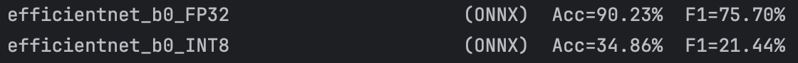
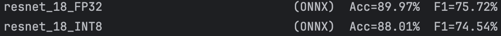
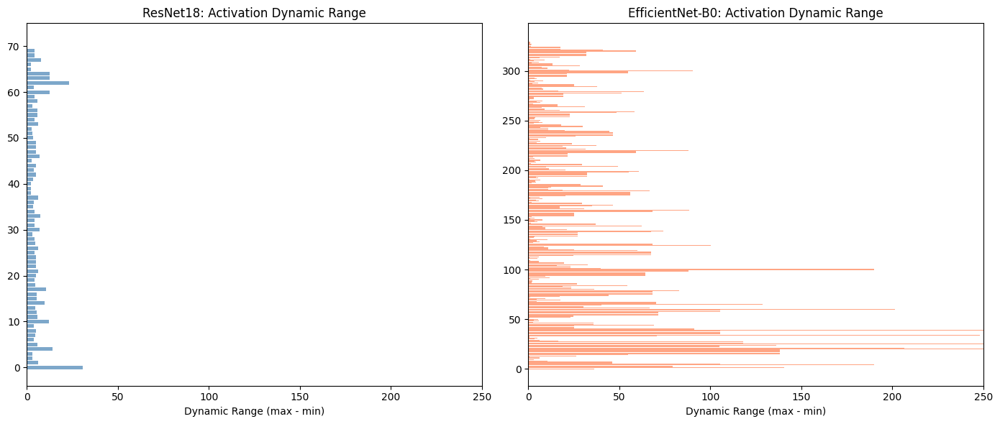

EyesOff: Why Some Models Quantize Better Than Others
Author
Yusuf Mohammad
Published
February 11, 2026
TLDR
Some models quantize better than others, in this case it was EfficientNetB0 and ResNet18 (the latter quantized better).
The issue is that the range of activation values of the EfficientNetB0 network is quite large, this is caused by the architecture, so when they are cast to INT8 values the error is large.
Therefore, when training your own models then if quantization is in the pipeline, check the ranges of activation values post training if the range is large you might see issues with quantization.
NOTE: You must check the values post training as at init time the model might not display the same activation behaviour.
Glossary
ENB0
EfficientNetB0
RN18
ResNet18
A case study on Quantizing EfficientNetB0 and ResNet18
Quantization was employed in an effort to speedup and reduce the battery usage5 of the model used in EyesOff (EfficientNet_B0). However, when testing the quantized model on the benchmark the accuracy dropped massively (from ~90% to ~34%). This sparked an investigation to understand why ENB0 quantizes poorly and why another model (RN18) quantizes well.
Quantization Theory Overview
It’s useful to look into some of the theory of quantization before diving deep into experiments, it will become especially useful later.
The goal of quantization is to convert a FloatingPoint32 (FP32) model into an 8-bit integer (INT8) model. I.e. the weights and activations of the model are cast to INT8, however it is not a simple cast. By doing this we gain speed, efficiency and a reduction in memory usage - at the cost of some accuracy (depending on the model…).
So for a given model, we will have a range of FP32 values \([a, b]\) and the goal is to convert this range into the INT8 space. Now imagine a value \(x\), which belongs to the range \([a, b]\). This \(x\) can be defined by the following quantization scheme:
\[
x = S * (x_{q} - Z)
\]
Where:
\(x_{q}\) = INT8 Quantized \(x\)
\(S\) = Scale factor (a positive FP32 value)
\(Z\) = Zero point, the INT8 value corresponding to 0 in the FP32 realm.
Therefore, \(x_{q}\) can be defined as:
\[
x_{q} = round(\frac{x}{S} + Z)
\]
Quantization calibration
We’ve discussed \([a, b]\) a bit already, but how do we actually get these values? For weights it is easy, as weights are fixed and are known ahead of time, it becomes trickier when considering activations which may vary based on the input. This is the point of calibration and there are three types of calibration:
• Post-Training Dynamic Quantization - the range for each activation is computed on the fly at inference time, this method is very accurate however it can be slower due to the overhead of on the fly computations.
• Static Quantization (what I use in this post) - range computed in advance at quantization time. By passing representative examples (training data for example) we can calculate the expected range of FP32 activation values ahead of time. This is much quicker but does come at the cost of some accuracy, as the ranges are only as good as the examples we provide - think of general issues with generalisability and OOD samples.
• Quantization Aware Training - the range for each activation is computed at training time. It’s similar to static, but it is a bit more involved.
Now one simple way to actually calculate the range \([a, b]\) is to take the worst case of minimum value and maximum value when calibrating the model. Refer to the further reading for other approaches1.
With the quantized model in hand, it’s time to benchmark - the first benchmark is speed (as increased inference speed was one of initial goals).
Benchmark the quantized model
FP32_MODEL_PATH ="./model_preprocessed.onnx"INT8_MODEL_PATH ="model_int8_static.onnx"FRAMES_DIR ='./frames'NUM_WARMUP =10NUM_BENCHMARK =100def load_onnx_model(model_path, provider='cpu'):"""Load ONNX model with specified provider.""" providers = ['CPUExecutionProvider']if provider =='coreml': providers = ['CoreMLExecutionProvider', 'CPUExecutionProvider'] sess_options = ort.SessionOptions() sess_options.graph_optimization_level = ort.GraphOptimizationLevel.ORT_ENABLE_ALLreturn ort.InferenceSession(model_path, sess_options, providers=providers)def warmup_onnx(session, dummy_input, n=10):"""Warmup ONNX session.""" input_name = session.get_inputs()[0].name x = dummy_input[np.newaxis, ...].astype(np.float32)for _ inrange(n): session.run(None, {input_name: x})def benchmark_onnx(session, frames, preprocess_fn, num_runs=None):""" Benchmark ONNX model inference. Returns: List of inference times (seconds per frame) """ input_name = session.get_inputs()[0].name times = []if num_runs isNone: num_runs =len(frames)for i inrange(min(num_runs, len(frames))): x = preprocess_fn(frames[i])[np.newaxis, ...].astype(np.float32) t0 = time.perf_counter() session.run(None, {input_name: x}) t1 = time.perf_counter() times.append(t1 - t0)return timesdef print_benchmark_results(results):"""Print benchmark results table."""print(f"\n{'='*80}")print("BENCHMARK RESULTS")print('='*80)print(f"{'Model':<35}{'Size (MB)':<12}{'ms/frame':<12}{'FPS':<10}{'Speedup':<10}")print("-"*80) baseline_ms = results[0]['ms']for r in results: speedup = baseline_ms / r['ms']print(f"{r['name']:<35}{r['size']:<12.2f}{r['ms']:<12.2f}{r['fps']:<10.1f}{speedup:<10.2f}x")# Load test framesprint("Loading test frames...")frames_dir = Path(FRAMES_DIR)frame_files =sorted(frames_dir.glob('*.jpg'))[:NUM_BENCHMARK]frames = [cv2.imread(str(f)) for f in frame_files]frames = [f for f in frames if f isnotNone]print(f"Loaded {len(frames)} frames")# Create dummy input for warmupdummy_input = preprocess_imagenet(frames[0])# Load modelsprint("\nLoading models...")fp32_session = load_onnx_model(FP32_MODEL_PATH, 'cpu')int8_session = load_onnx_model(INT8_MODEL_PATH, 'cpu')# Warmupprint("Warming up...")warmup_onnx(fp32_session, dummy_input, NUM_WARMUP)warmup_onnx(int8_session, dummy_input, NUM_WARMUP)# Benchmarkprint(f"\nBenchmarking on {len(frames)} frames...")print(" FP32...")fp32_times = benchmark_onnx(fp32_session, frames, preprocess_imagenet)print(" INT8...")int8_times = benchmark_onnx(int8_session, frames, preprocess_imagenet)# Resultsresults = [ {'name': 'FP32 ONNX','size': Path(FP32_MODEL_PATH).stat().st_size / (1024*1024),'ms': np.mean(fp32_times) *1000,'fps': 1000/ (np.mean(fp32_times) *1000), }, {'name': 'INT8 Static (QDQ)','size': Path(INT8_MODEL_PATH).stat().st_size / (1024*1024),'ms': np.mean(int8_times) *1000,'fps': 1000/ (np.mean(int8_times) *1000), },]print_benchmark_results(results)
Loading test frames...
Loaded 100 frames
Loading models...
Warming up...
Benchmarking on 100 frames...
FP32...
INT8...
================================================================================
BENCHMARK RESULTS
================================================================================
Model Size (MB) ms/frame FPS Speedup
--------------------------------------------------------------------------------
FP32 ONNX 15.93 7.88 127.0 1.00 x
INT8 Static (QDQ) 4.44 3.68 271.7 2.14 x
Much quicker, lovely jubbly!
Now, let’s run the model on the test data and check how it performs vs the unquantized model.

Figure 1 - EfficientNetB0 Metrics across benchmark videos
The accuracy drop is huge! The quantized ENB0 is unusable - time to find out why!
Is it Me or the Model - Testing ResNet18
Given the poor performance of the quantized ENB0, my first thought was “is this a bug in my code, or are the results truly reflective of the model?”. To ensure it wasn’t a bug I trained a much simpler model, RN18 (with the exact same quantization setup) and the benchmark results were:

Figure 2 - ResNet18 Metrics across benchmark videos
RN18 quantizes much better, indicating the issue lies with the ENB0 model itself. Note, RN18 INT8 is not immune to accuracy loss, however it’s to be expected and a ~2% accuracy loss is palatable with the inference speedup.
Inspecting the Weight and Activation Values of ResNet18 and EfficientNetB0 Pre-Quantization
To get greater insight into how and why the models respond differently to quantization, we can pass the same input through each model prior to quantization and observe the values of weights and activations at each layer. At this point we’re looking to see how the range of values in activations differ, the ranges and standard deviation etc. Remember that INT8 quantization can represent at most 256 values, so the wider the range of FP32 values the harder it is to fit them into the INT8 range.
Run inference on pth models for inspection
resnet_18_state_dict ="./resnet_18.pth"efficenet_b0_state_dict ="./efficientnet_b0.pth"def build_efficientnet_b0():"""Build EfficientNet-B0 with custom binary classification head.""" model = models.efficientnet_b0(weights=None) model.classifier = nn.Sequential( nn.Dropout(0.6), nn.Linear(1280, 128), nn.ReLU(inplace=True), nn.Dropout(0.6), nn.Linear(128, 1), )return modeldef build_resnet18():"""Build ResNet18 with custom binary classification head.""" model = models.resnet18(weights=None) in_features = model.fc.in_features model.fc = nn.Sequential( nn.Dropout(0.6), nn.Linear(in_features, 128), nn.ReLU(inplace=True), nn.Dropout(0.6), nn.Linear(128, 1), )return modeldef load_weights(path):"""Load weights, handling both raw state_dict and checkpoint formats.""" checkpoint = torch.load(path, map_location="cpu", weights_only=False)ifisinstance(checkpoint, dict) and'model_state_dict'in checkpoint:return checkpoint['model_state_dict']return checkpoint# ImageNet normalizationmean = np.array([0.485, 0.456, 0.406], dtype=np.float32)std = np.array([0.229, 0.224, 0.225], dtype=np.float32)def preprocess(face_crop: np.ndarray) -> torch.Tensor:"""Preprocess face crop for model input.""" img = cv2.resize(face_crop, (224, 224)) img = cv2.cvtColor(img, cv2.COLOR_BGR2RGB) img = img.transpose(2, 0, 1).astype(np.float32) /255.0 img = (img - mean[:, None, None]) / std[:, None, None]return torch.from_numpy(img).unsqueeze(0)# Load model and saved weights into the modelresnet_model = build_resnet18()efficientnet_model = build_efficientnet_b0()resnet_model.load_state_dict(load_weights(resnet_18_state_dict))efficientnet_model.load_state_dict(load_weights(efficenet_b0_state_dict))resnet_model.eval()efficientnet_model.eval()input_frame = calibration_data[0]input_frame = preprocess(input_frame)with torch.no_grad(): resnet_output = torch.sigmoid(resnet_model(input_frame)) efficientnet_output = torch.sigmoid(efficientnet_model(input_frame))
Having loaded the models, and having ran a single input through both allows us to inspect the activation values at each layer.
Print raw statistics for each layer
def get_activation_stats(model, input_tensor, model_name="Model"):"""Capture activation statistics at ALL layers.""" activations = {} hooks = []def make_hook(name):def hook(module, input, output):ifisinstance(output, torch.Tensor): activations[name] = {'shape': output.shape,'min': output.min().item(),'max': output.max().item(),'mean': output.mean().item(),'std': output.std().item() if output.numel() >1else0.0,'zeros_pct': (output ==0).float().mean().item() *100,'layer_type': module.__class__.__name__, }return hook# Register hooks on ALL modules (no filtering)for name, module in model.named_modules():if name: # Skip the root module (empty name) hooks.append(module.register_forward_hook(make_hook(name)))# Forward passwith torch.no_grad(): model(input_tensor)# Remove hooksfor h in hooks: h.remove()# Print resultsprint(f"\n{'='*100}")print(f"{model_name} Activation Statistics (ALL {len(activations)} layers)")print(f"{'='*100}")print(f"{'Layer':<40}{'Type':<15}{'Min':>9}{'Max':>9}{'Range':>9}{'Std':>9}")print("-"*100)for name, stats in activations.items(): dyn_range = stats['max'] - stats['min']print(f"{name:<40}{stats['layer_type']:<15}{stats['min']:>9.2f}{stats['max']:>9.2f}{dyn_range:>9.2f}{stats['std']:>9.2f}")return activations# Re-run with ALL layersinput_tensor = preprocess(calibration_data[0])resnet_acts = get_activation_stats(resnet_model, input_tensor, "ResNet18")effnet_acts = get_activation_stats(efficientnet_model, input_tensor, "EfficientNet-B0")print(f"\nTotal ResNet layers captured: {len(resnet_acts)}")print(f"Total EfficientNet layers captured: {len(effnet_acts)}")
Visualise output of above code
import matplotlib.pyplot as pltimport numpy as np# Extract the key metrics from your datadef analyze_for_quantization(activations):"""Extract quantization-relevant metrics.""" metrics = []for name, stats in activations.items(): dynamic_range = stats['max'] - stats['min'] outlier_ratio =max(abs(stats['max']), abs(stats['min'])) / (stats['std'] +1e-8) metrics.append({'name': name,'dynamic_range': dynamic_range,'outlier_ratio': outlier_ratio,'std': stats['std'],'max': stats['max'],'min': stats['min'],'mean': stats['mean'], })return metricsresnet_metrics = analyze_for_quantization(resnet_acts)effnet_metrics = analyze_for_quantization(effnet_acts)# ============================================================# VISUALIZATION 1: Dynamic Range Comparison (Side-by-side bars)# ============================================================fig, axes = plt.subplots(1, 2, figsize=(14, 6))# ResNetresnet_ranges = [m['dynamic_range'] for m in resnet_metrics]axes[0].barh(range(len(resnet_ranges)), resnet_ranges, color='steelblue', alpha=0.7)axes[0].set_xlabel('Dynamic Range (max - min)')axes[0].set_title('ResNet18: Activation Dynamic Range')axes[0].set_xlim(0, 250)# EfficientNeteffnet_ranges = [m['dynamic_range'] for m in effnet_metrics]axes[1].barh(range(len(effnet_ranges)), effnet_ranges, color='coral', alpha=0.7)axes[1].set_xlabel('Dynamic Range (max - min)')axes[1].set_title('EfficientNet-B0: Activation Dynamic Range')axes[1].set_xlim(0, 250)plt.tight_layout()plt.savefig('dynamic_range_comparison.png', dpi=150, bbox_inches='tight')plt.show()# ============================================================# TOP 5 WORST LAYERS COMPARISON# ============================================================# Calculate dynamic range for each layerresnet_layers = []for name, stats in resnet_acts.items(): resnet_layers.append({'name': name,'min': stats['min'],'max': stats['max'],'dynamic_range': stats['max'] - stats['min'],'std': stats['std'] })effnet_layers = []for name, stats in effnet_acts.items(): effnet_layers.append({'name': name,'min': stats['min'],'max': stats['max'],'dynamic_range': stats['max'] - stats['min'],'std': stats['std'] })# Sort by dynamic range (worst first)resnet_sorted =sorted(resnet_layers, key=lambda x: x['dynamic_range'], reverse=True)effnet_sorted =sorted(effnet_layers, key=lambda x: x['dynamic_range'], reverse=True)# Print comparisonprint()print("="*90)print("TOP 5 WORST LAYERS BY DYNAMIC RANGE")print("\nRESNET18")print("-"*90)print(f"{'Rank':<6}{'Layer':<35}{'Min':>10}{'Max':>10}{'Range':>10}")print("-"*90)for i, m inenumerate(resnet_sorted[:5], 1): precision = m['dynamic_range'] /256print(f"{i:<6}{m['name']:<35}{m['min']:>10.2f}{m['max']:>10.2f}{m['dynamic_range']:>10.2f}")print("\nEFFICIENTNET-B0")print("-"*90)print(f"{'Rank':<6}{'Layer':<35}{'Min':>10}{'Max':>10}{'Range':>10}")print("-"*90)for i, m inenumerate(effnet_sorted[:5], 1): precision = m['dynamic_range'] /256print(f"{i:<6}{m['name']:<35}{m['min']:>10.2f}{m['max']:>10.2f}{m['dynamic_range']:>10.2f}")

==========================================================================================
TOP 5 WORST LAYERS BY DYNAMIC RANGE
RESNET18
------------------------------------------------------------------------------------------
Rank Layer Min Max Range
------------------------------------------------------------------------------------------
1 conv1 -17.45 13.38 30.84
2 layer4.1.bn2 -11.48 11.88 23.36
3 layer1.0.conv1 -9.84 4.13 13.97
4 layer4.1.relu 0.00 12.31 12.31
5 layer4.1 0.00 12.31 12.31
EFFICIENTNET-B0
------------------------------------------------------------------------------------------
Rank Layer Min Max Range
------------------------------------------------------------------------------------------
1 features.2.0.block.0.0 -169.51 158.38 327.90
2 features.2.0.block.1.1 -163.37 117.90 281.27
3 features.2.1.block.0.0 -180.45 76.43 256.88
4 features.2.0.block.3.0 -136.70 111.38 248.08
5 features.2.0.block.0.1 -101.67 104.81 206.48
Wow, would you look at the difference! For now let’s leave the actual layer differences aside and focus attention on the numbers. The big picture here is that ResNet activations values are “nicer” and more uniform layer to layer. The ranges don’t vary wildly, the numbers themselves are much smaller and the standard deviation is much more reasonable. EfficientNet is lacking in all of these aspects and it is this which causes the poor quantization performance.
Let’s dig a little deeper now, first understanding why the range matters and then go on to look at understanding which layer in the ENB0 causes the issues.
Why Does a Larger Range Make it Harder for INT8?
The greater range makes it harder to bin all the FP32 values into INT8 values. This can be understood further by going back to the formula for quantization:
\[
x_{q} = round(\frac{x}{S} + Z)
\]
We can use ONNX to get the \(S\) and \(Z\) values and manually run through some examples to see how quantization works:
Code to get the S and Z given an ONNX layer name
import onnximport numpy as npfrom onnx import numpy_helper# ============================================================# LOAD QUANTIZATION PARAMETERS FROM ONNX MODELS# ============================================================def extract_quant_params(onnx_path):"""Extract scale and zero_point for each quantized layer.""" model = onnx.load(onnx_path) initializers = {init.name: numpy_helper.to_array(init) for init in model.graph.initializer} quant_params = {}for name, value in initializers.items():if'_scale'in name: base_name = name.replace('_scale', '')if base_name notin quant_params: quant_params[base_name] = {} quant_params[base_name]['scale'] =float(value) if value.size ==1else valueelif'_zero_point'in name: base_name = name.replace('_zero_point', '')if base_name notin quant_params: quant_params[base_name] = {} quant_params[base_name]['zero_point'] =int(value) if value.size ==1else valuereturn quant_params# Load from ONNX modelsresnet_params = extract_quant_params('./resnet18_int8.onnx')effnet_params = extract_quant_params('./model_int8_static.onnx')# ============================================================# GET SCALE AND ZERO POINT FOR WORST LAYERS# ============================================================# ResNet worst layer (conv1 -> bn1 -> relu output)resnet_layer ='/relu/Relu_output_0'resnet_scale = resnet_params[resnet_layer]['scale']resnet_zp = resnet_params[resnet_layer]['zero_point']# EfficientNet worst layer (features.2.0.block.0.0)effnet_layer ='/features/features.2/features.2.0/block/block.0/block.0.0/Conv_output_0'effnet_scale = effnet_params[effnet_layer]['scale']effnet_zp = effnet_params[effnet_layer]['zero_point']# ============================================================# PRINT COMPARISON# ============================================================print("="*70)print("WORST LAYER QUANTIZATION PARAMETERS (from ONNX)")print("="*70)print(f"\n{'Model':<20}{'Layer':<30}{'Scale':>12}{'Zero Point':>12}")print("-"*70)print(f"{'ResNet18':<20}{'conv1':<30}{resnet_scale:>12.6f}{resnet_zp:>12}")print(f"{'EfficientNet-B0':<20}{'features.2.0.block.0.0':<30}{effnet_scale:>12.6f}{effnet_zp:>12}")print("-"*70)
======================================================================
WORST LAYER QUANTIZATION PARAMETERS (from ONNX)
======================================================================
Model Layer Scale Zero Point
----------------------------------------------------------------------
ResNet18 conv1 0.041440 -128
EfficientNet-B0 features.2.0.block.0.0 2.531122 24
----------------------------------------------------------------------
Now given this why is it harder to represent the larger range? As mentioned, when converting to INT8 values we are binning and the larger our range is the larger our bins must be, this is why the scale is larger. Let’s take a look at a concrete example:
val_a =7val_b =7.5# First we quantize with the RN18 S and Zval_a_INT8_resnet =round((val_a / resnet_scale) + resnet_zp)val_b_INT8_resnet =round((val_b / resnet_scale) + resnet_zp)print(f"RN18 INT8 Representation: val_a: {val_a_INT8_resnet} | val_b: {val_b_INT8_resnet}\n")# Quantize with the ENB0 S and Zval_a_INT8_effnet =round((val_a / effnet_scale) + effnet_zp)val_b_INT8_effnet =round((val_b / effnet_scale) + effnet_zp)print(f"ENB0 INT8 Representation: val_a: {val_a_INT8_effnet} | val_b: {val_b_INT8_effnet}")
The INT8 value for 7 and 7.5, with ENB0 scale and zero, is the same for both values! To get a different value you would have to set the number > 7 + 2.531122 whereas for RN18 it only need be > 7 + 0.041440. This really highlights why the wild ranges cause the loss in performance, it’s very difficult to maintain values as they were in the original network.
Why ResNet18 Quantizes Well and EfficientNetB0 Doesn’t - A Component by Component Analysis
So, ENB0 quantizes poorly because its activations are all over the place. The model still works well overall, it just isn’t cut out for quantization. But, what causes the erratic behaviour?
I think it’s to do with the actual architecture itself, RN18 is a pretty vanilla network - its blocks are made up of Convolution, BatchNorm and ReLU2. ENB0, on the other hand has a more complicated setup - the core block is the MBConv which consists of a SiLU, convolution, depthwise convolution and a squeeze and excite operator3. There is something in this architecture causing the poorly conditioned activations and we will find it.
The New Layers of EfficientNetB0
DepthwiseSeparableConvolution - A more efficient version of convolution, they work by splitting a single convolution into 2 layers.
SiLU - Similar to ReLU but it allows small negative gradients to flow through, its aim is to result in fewer dead neurons.
I’ll start the investigation with a simple case, 2 small networks. One will have convolution layers and the other will be with MBConv layers.
The Investigation - Studying the Layers
The idea here is to see if passing a dummy input through an untrained model reveals anything about the differences in RN18 and ENB0 and where the wild ranges of the latter model arise from.
Building the models
In the expandable box you will find the code for the RN18 blocks and ENB0 blocks, we are taking 2 blocks from each model here. Then in the next box a dummy input is passed into the randomly initialised models.
Code to build blocks of ResNet and EfficientNet
class ResNetStackedModel(nn.Module):def__init__(self):super().__init__()# Block 1: 3 → 64self.conv1_b1 = nn.Conv2d(3, 64, kernel_size=3, stride=1, padding=1, bias=False)self.bn1_b1 = nn.BatchNorm2d(64)self.relu1_b1 = nn.ReLU()self.conv2_b1 = nn.Conv2d(64, 64, kernel_size=3, stride=1, padding=1, bias=False)self.bn2_b1 = nn.BatchNorm2d(64)# Block 2: 64 → 64self.conv1_b2 = nn.Conv2d(64, 64, kernel_size=3, stride=1, padding=1, bias=False)self.bn1_b2 = nn.BatchNorm2d(64)self.relu1_b2 = nn.ReLU()self.conv2_b2 = nn.Conv2d(64, 64, kernel_size=3, stride=1, padding=1, bias=False)self.bn2_b2 = nn.BatchNorm2d(64)def forward(self, x): x =self.conv1_b1(x); x =self.bn1_b1(x); x =self.relu1_b1(x) x =self.conv2_b1(x); x =self.bn2_b1(x) x =self.conv1_b2(x); x =self.bn1_b2(x); x =self.relu1_b2(x) x =self.conv2_b2(x); x =self.bn2_b2(x)return xclass EfficientNetStackedModel(nn.Module):def__init__(self):super().__init__()# Block 1: 16 → 24 (expand to 96, squeeze to 4)self.conv1_expand_b1 = nn.Conv2d(16, 96, kernel_size=1, bias=False)self.bn1_expand_b1 = nn.BatchNorm2d(96)self.silu1_expand_b1 = nn.SiLU()self.conv2_dw_b1 = nn.Conv2d(96, 96, kernel_size=3, groups=96, padding=1, bias=False)self.bn2_dw_b1 = nn.BatchNorm2d(96)self.silu2_dw_b1 = nn.SiLU()self.avg_pool_b1 = nn.AdaptiveAvgPool2d(1)self.conv3_se_b1 = nn.Conv2d(96, 4, kernel_size=1)self.silu3_se_b1 = nn.SiLU()self.conv4_se_b1 = nn.Conv2d(4, 96, kernel_size=1)self.sigmoid_b1 = nn.Sigmoid()self.conv5_proj_b1 = nn.Conv2d(96, 24, kernel_size=1, bias=False)self.bn3_proj_b1 = nn.BatchNorm2d(24)# Block 2: 24 → 24 (expand to 144, squeeze to 6)self.conv1_expand_b2 = nn.Conv2d(24, 144, kernel_size=1, bias=False)self.bn1_expand_b2 = nn.BatchNorm2d(144)self.silu1_expand_b2 = nn.SiLU()self.conv2_dw_b2 = nn.Conv2d(144, 144, kernel_size=3, groups=144, padding=1, bias=False)self.bn2_dw_b2 = nn.BatchNorm2d(144)self.silu2_dw_b2 = nn.SiLU()self.avg_pool_b2 = nn.AdaptiveAvgPool2d(1)self.conv3_se_b2 = nn.Conv2d(144, 6, kernel_size=1)self.silu3_se_b2 = nn.SiLU()self.conv4_se_b2 = nn.Conv2d(6, 144, kernel_size=1)self.sigmoid_b2 = nn.Sigmoid()self.conv5_proj_b2 = nn.Conv2d(144, 24, kernel_size=1, bias=False)self.bn3_proj_b2 = nn.BatchNorm2d(24)def _mbconv_forward(self, x, suffix): x =getattr(self, f'conv1_expand_{suffix}')(x) x =getattr(self, f'bn1_expand_{suffix}')(x) x =getattr(self, f'silu1_expand_{suffix}')(x) x =getattr(self, f'conv2_dw_{suffix}')(x) x =getattr(self, f'bn2_dw_{suffix}')(x) x =getattr(self, f'silu2_dw_{suffix}')(x) x_in = x scale =getattr(self, f'avg_pool_{suffix}')(x) scale =getattr(self, f'conv3_se_{suffix}')(scale) scale =getattr(self, f'silu3_se_{suffix}')(scale) scale =getattr(self, f'conv4_se_{suffix}')(scale) scale =getattr(self, f'sigmoid_{suffix}')(scale) x = scale * x_in x =getattr(self, f'conv5_proj_{suffix}')(x) x =getattr(self, f'bn3_proj_{suffix}')(x)return xdef forward(self, x): x =self._mbconv_forward(x, 'b1') x =self._mbconv_forward(x, 'b2')return x
Interesting, the activation statistics show that at initialisation time both models exhibit very similar behaviour - the values are well behaved and exhibit “nice” values. The outcome here doesn’t fit my hypothesis. This is surprising, but it highlights that at init time there is nothing inherently bad or good about either network. Nonetheless, the issues leading to the poor quantization must appear somewhere and my next best guess is training time dynamics.
However, note that the large activation ranges appear at BatchNorm layers, and from this the next experiment will draw out exactly where and when the instability begins.
Exploring Training Time Dynamics
To see where the instability begins, we will train both RN18 and the ENB0 models from scratch on ImageWoof4, a 10 class classification task to determine which breed a dog is. Every 5 epochs the code will log the activation min, max and std deviation values for first 2 layers in each network. This will reveal to us where and when the issue arises.
Training loop code for ImageWoof with ResNet18 and EfficientNetB0
"""Train ResNet18 and EfficientNet-B0 from scratch on ImageWoof (10 classes).Log activation statistics for specific blocks every N epochs.Save results to JSON for later analysis.Designed to run in a Jupyter notebook on MPS."""import jsonimport osimport torchimport torch.nn as nnimport torch.optim as optimfrom torch.utils.data import DataLoaderfrom torchvision import datasets, transforms, models# ============================================================# CONFIG — edit these as needed# ============================================================DATA_DIR ="./data/imagewoof2-320"# <-- UPDATE THISBATCH_SIZE =64NUM_EPOCHS =25LOG_EVERY =5LR =0.01MOMENTUM =0.9WEIGHT_DECAY =1e-4SEED =42OUTPUT_DIR ="./experiment_results"NUM_WORKERS =0# 0 is safest on MPS, increase if stable# ============================================================# DEVICE SETUP# ============================================================torch.manual_seed(SEED)if torch.cuda.is_available(): device = torch.device("cuda") torch.cuda.manual_seed_all(SEED)elif torch.backends.mps.is_available(): device = torch.device("mps")else: device = torch.device("cpu")print(f"Using device: {device}")# ============================================================# 1. MODEL BUILDERS# ============================================================def build_resnet18(num_classes=10):"""ResNet18 from scratch with simple classification head.""" model = models.resnet18(weights=None) model.fc = nn.Linear(512, num_classes)return modeldef build_efficientnet_b0(num_classes=10):"""EfficientNet-B0 from scratch with simple classification head.""" model = models.efficientnet_b0(weights=None) model.classifier = nn.Sequential( nn.Linear(1280, num_classes), )return model# ============================================================# 2. DATA SETUP# ============================================================def get_dataloaders(data_dir, batch_size=64, num_workers=0): train_transform = transforms.Compose([ transforms.RandomResizedCrop(224), transforms.RandomHorizontalFlip(), transforms.ToTensor(), transforms.Normalize( mean=[0.485, 0.456, 0.406], std=[0.229, 0.224, 0.225], ), ]) val_transform = transforms.Compose([ transforms.Resize(256), transforms.CenterCrop(224), transforms.ToTensor(), transforms.Normalize( mean=[0.485, 0.456, 0.406], std=[0.229, 0.224, 0.225], ), ]) train_dataset = datasets.ImageFolder( os.path.join(data_dir, "train"), transform=train_transform, ) val_dataset = datasets.ImageFolder( os.path.join(data_dir, "val"), transform=val_transform, ) train_loader = DataLoader( train_dataset, batch_size=batch_size, shuffle=True, num_workers=num_workers, pin_memory=False, # pin_memory=False for MPS ) val_loader = DataLoader( val_dataset, batch_size=batch_size, shuffle=False, num_workers=num_workers, pin_memory=False, )return train_loader, val_loader# ============================================================# 3. ACTIVATION LOGGING# ============================================================def get_activation_stats_for_blocks(model, input_tensor, block_prefixes):""" Capture activation statistics for layers within specified blocks. """ activations = {} hooks = []def make_hook(name):def hook(module, input, output):ifisinstance(output, torch.Tensor): activations[name] = {"shape": list(output.shape),"min": output.min().item(),"max": output.max().item(),"mean": output.mean().item(),"std": output.std().item() if output.numel() >1else0.0,"range": (output.max() - output.min()).item(),"layer_type": module.__class__.__name__, }return hookfor name, module in model.named_modules():if name andany(name.startswith(prefix) for prefix in block_prefixes): hooks.append(module.register_forward_hook(make_hook(name)))with torch.no_grad(): model(input_tensor)for h in hooks: h.remove()return activations# ============================================================# 4. TRAINING LOOP# ============================================================def train_one_epoch(model, train_loader, criterion, optimizer, device): model.train() running_loss =0.0 correct =0 total =0for inputs, targets in train_loader: inputs, targets = inputs.to(device), targets.to(device) optimizer.zero_grad() outputs = model(inputs) loss = criterion(outputs, targets) loss.backward() optimizer.step() running_loss += loss.item() * inputs.size(0) _, predicted = outputs.max(1) total += targets.size(0) correct += predicted.eq(targets).sum().item()return running_loss / total, 100.0* correct / totaldef validate(model, val_loader, criterion, device): model.eval() running_loss =0.0 correct =0 total =0with torch.no_grad():for inputs, targets in val_loader: inputs, targets = inputs.to(device), targets.to(device) outputs = model(inputs) loss = criterion(outputs, targets) running_loss += loss.item() * inputs.size(0) _, predicted = outputs.max(1) total += targets.size(0) correct += predicted.eq(targets).sum().item()return running_loss / total, 100.0* correct / totaldef run_experiment( model, model_name, block_prefixes, train_loader, val_loader, fixed_batch, device, num_epochs=25, log_every=5, lr=0.01, momentum=0.9, weight_decay=1e-4,): model = model.to(device) criterion = nn.CrossEntropyLoss() optimizer = optim.SGD( model.parameters(), lr=lr, momentum=momentum, weight_decay=weight_decay, ) scheduler = optim.lr_scheduler.CosineAnnealingLR(optimizer, T_max=num_epochs) fixed_input = fixed_batch[0].to(device) results = {"model_name": model_name,"block_prefixes": block_prefixes,"hyperparameters": {"lr": lr,"momentum": momentum,"weight_decay": weight_decay,"num_epochs": num_epochs,"scheduler": "CosineAnnealingLR", },"training_history": [],"activation_logs": {}, }# Log at epoch 0 (before any training)print(f"\n{'='*60}")print(f" {model_name} — Logging activations at epoch 0 (init)")print(f"{'='*60}") model.eval() init_stats = get_activation_stats_for_blocks(model, fixed_input, block_prefixes) results["activation_logs"]["epoch_0"] = init_stats val_loss, val_acc = validate(model, val_loader, criterion, device) results["training_history"].append({"epoch": 0,"train_loss": None,"train_acc": None,"val_loss": val_loss,"val_acc": val_acc, })print(f" Epoch 0 | Val Loss: {val_loss:.4f} | Val Acc: {val_acc:.2f}%")# Training loopfor epoch inrange(1, num_epochs +1): train_loss, train_acc = train_one_epoch( model, train_loader, criterion, optimizer, device ) val_loss, val_acc = validate(model, val_loader, criterion, device) scheduler.step() current_lr = optimizer.param_groups[0]["lr"]print(f" Epoch {epoch:>3d}/{num_epochs} | "f"Train Loss: {train_loss:.4f} | Train Acc: {train_acc:.2f}% | "f"Val Loss: {val_loss:.4f} | Val Acc: {val_acc:.2f}% | "f"LR: {current_lr:.6f}" ) results["training_history"].append({"epoch": epoch,"train_loss": train_loss,"train_acc": train_acc,"val_loss": val_loss,"val_acc": val_acc, })# Log activations every N epochsif epoch % log_every ==0or epoch == num_epochs:print(f" → Logging activations at epoch {epoch}") model.eval() stats = get_activation_stats_for_blocks( model, fixed_input, block_prefixes ) results["activation_logs"][f"epoch_{epoch}"] = statsreturn results, model# ============================================================# 5. RUN EXPERIMENT# ============================================================# Datatrain_loader, val_loader = get_dataloaders( DATA_DIR, batch_size=BATCH_SIZE, num_workers=NUM_WORKERS,)print(f"Train samples: {len(train_loader.dataset)}")print(f"Val samples: {len(val_loader.dataset)}")print(f"Classes: {train_loader.dataset.classes}")# Fixed batch for consistent activation loggingfixed_batch =next(iter(val_loader))print(f"Fixed batch shape: {fixed_batch[0].shape}")# Shared training configtrain_kwargs =dict( train_loader=train_loader, val_loader=val_loader, fixed_batch=fixed_batch, device=device, num_epochs=NUM_EPOCHS, log_every=LOG_EVERY, lr=LR, momentum=MOMENTUM, weight_decay=WEIGHT_DECAY,)os.makedirs(OUTPUT_DIR, exist_ok=True)# ---- ResNet18 ----print("\n"+"="*60)print(" TRAINING RESNET18")print("="*60)resnet = build_resnet18(num_classes=10)resnet_results, resnet_trained = run_experiment( model=resnet, model_name="ResNet18", block_prefixes=["layer1.0", "layer1.1"],**train_kwargs,)resnet_path = os.path.join(OUTPUT_DIR, "resnet18_results.json")withopen(resnet_path, "w") as f: json.dump(resnet_results, f, indent=2)print(f"\nResNet18 results saved to {resnet_path}")torch.save( resnet_trained.state_dict(), os.path.join(OUTPUT_DIR, "resnet18_imagewoof.pth"),)# ---- EfficientNet-B0 ----print("\n"+"="*60)print(" TRAINING EFFICIENTNET-B0")print("="*60)efficientnet = build_efficientnet_b0(num_classes=10)effnet_results, effnet_trained = run_experiment( model=efficientnet, model_name="EfficientNet-B0", block_prefixes=["features.1.0", "features.2.0"],**train_kwargs,)effnet_path = os.path.join(OUTPUT_DIR, "efficientnet_b0_results.json")withopen(effnet_path, "w") as f: json.dump(effnet_results, f, indent=2)print(f"\nEfficientNet-B0 results saved to {effnet_path}")torch.save( effnet_trained.state_dict(), os.path.join(OUTPUT_DIR, "efficientnet_b0_imagewoof.pth"),)print("\n"+"="*60)print(" EXPERIMENT COMPLETE")print("="*60)print(f"All results saved to {OUTPUT_DIR}/")
Now with the output and upon further inspection, we see issues arise at the Depthwise Convs, look at the activation value after the Depthwise Conv and the subsequent BatchNorm.
Load and show the training json
import jsonwithopen('experiment_results/resnet18_results.json') as f: rdata = json.load(f)withopen('experiment_results/efficientnet_b0_results.json') as f: edata = json.load(f)epochs = ["epoch_0", "epoch_5", "epoch_10", "epoch_15", "epoch_20", "epoch_25"]ep_labels = ["Ep0", "Ep5", "Ep10", "Ep15", "Ep20", "Ep25"]def get_range(data, epoch, layer):return data["activation_logs"][epoch].get(layer, {}).get("range", 0)def get_std(data, epoch, layer):return data["activation_logs"][epoch].get(layer, {}).get("std", 0)def ratio(data, epoch, conv, bn): c = get_range(data, epoch, conv) b = get_range(data, epoch, bn)return b / c if c >0.001elseNonedef fmt(v, decimals=2):returnf"{v:.{decimals}f}"if v isnotNoneelse"N/A"# Table 2: Raw rangesprint("\n\nRaw Activation Ranges (Conv → BN)")print(f"{'Layer':<32}{'Ep0':>6}{'Ep5':>6}{'Ep10':>6}{'Ep15':>6}{'Ep20':>6}{'Ep25':>6}")print("-"*70)detail_rows = [ ("ResNet Conv1", rdata, "layer1.0.conv1"), ("ResNet BN1", rdata, "layer1.0.bn1"),None, ("EffNet Depthwise Conv", edata, "features.2.0.block.1.0"), ("EffNet Depthwise BN", edata, "features.2.0.block.1.1"),None, ("EffNet Expand Conv", edata, "features.2.0.block.0.0"), ("EffNet Expand BN", edata, "features.2.0.block.0.1"),]for row in detail_rows:if row isNone:print()continue label, data, layer = row vals = [fmt(get_range(data, ep, layer), 1) for ep in epochs]print(f"{label:<32}{vals[0]:>6}{vals[1]:>6}{vals[2]:>6}{vals[3]:>6}{vals[4]:>6}{vals[5]:>6}")
As noted, at init time both models exhibit similar behaviours. But, by epoch 5 their behaviours have diverged. In ENB0, BatchNorm is expanding the activation ranges. The range of values outputted by DepthWise conv is pretty reasonable, but after the BatchNorm they get crazy.
There is a paper discussing this phenomenon in more detail, check it out for more coverage. But, we can get an insight into it by going back to the original EyesOff Models I trained.
Going Back to the EyesOff Models
To understand the output, we first need to better understand the DepthWise convolution. In the DepthWise conv the number of filters = number of input channels as such each filter only operates on a single input channel. Bear in mind in a regular conv each filter operates across all input channels - meaning they see much more values. Due to this, the filters of DepthWise convs can have different scales/their values can differ quite a bit across filters. This can be seen below:
Compare per-channel activation mismatch and BN gamma: Depthwise Conv vs Regular Conv
======================================================================
PER-CHANNEL ACTIVATION STD (output of conv layers)
======================================================================
Metric ResNet Conv EffNet DW Conv
------------------------------------------------------------
Num channels 64 96
Mean of ch stds 0.4786 1.9116
Std of ch stds 0.2081 1.8563
Min ch std 0.1341 0.0118
Max ch std 1.0941 8.9032
======================================================================
BATCHNORM GAMMA
======================================================================
Metric ResNet BN1 EffNet DW BN
------------------------------------------------------------
Mean gamma 0.3396 5.5246
Std of gamma 0.1248 2.1555
Min gamma 0.1683 2.0408
Max gamma 0.6440 12.0095
Look at the difference in the mean and std deviation of the channel stats of the RN18 filters vs the ENB0 ones! Looking at the difference in min and max std deviation is even more telling - the activations of ENB0 are just bigger, this goes back to the DepthWise conv’s filters, as each only operates on a single input channel they have a tendency to drift whereas the RN18 convs don’t.
Next look at that BatchNorm, the range of gamma values for ENB0 is massive in comparison to RN18. In ENB0’s filters the max std deviation of a channel is 8.9 whereas RN18 is much better behaved with a max std deviation across its channels of 1.08. This phenomenon is a direct outcome of the activation values ranges, the gammas need to work harder when the range is wilder.
This then exacerbates the issues we see with INT8 quantization as gamma is a linear multiplier in the BatchNorm calculation, so with a larger gamma outliers are amplified further - thus increasing the range of values which need to be quantized.
See below for a quick example of this, I take an example layer which just has 10 values and two of them are outliers (5 and 10) then we can see the effect of the RN18 gamma vs ENB0 gamma:
Range pre BatchNorm: 12.0
------------------------------------------------------------------------------------------
Raw actvation values post BatchNorm:
ENB0: tensor([ 7.2638, -20.2524, -12.3906, -2.5634, -8.4597, -7.4770, -4.5288,
-0.5980, -3.2317, 26.9182], dtype=torch.float64)
RN18: tensor([ 0.1996, -1.2760, -0.8544, -0.3274, -0.6436, -0.5909, -0.4328, -0.2220,
-0.3632, 1.2536], dtype=torch.float64)
------------------------------------------------------------------------------------------
Range post BatchNorm:
ENB0: 47.17061443435465
RN18: 2.529558665151854
------------------------------------------------------------------------------------------
Conclusion
The root cause of ENB0’s poor quantization is a chain reaction: it begins with DepthWiseSeparableConvs learning 1 filter per input channel. Then without the averaging effect of operating across all channels, filters drift to different scales. Next, BatchNorm learns large gamma values due to the different scales, amplifying outliers and widening the activation range even further. Finally, when this large activation range is quantized the error is too large, causing massive degradation in performance.
If you ever face issues in quantization performance, it’s worth checking the activation range of your model prior to quantizing.
As for EyesOff I am going with the RN18 model for now. I have tried QAT, but have not yet had a chance to fully test it out, also there exists other quantization methods for handling large ranges which would be worth a try. For now, RN18 is fast and accurate… what more can one ask from an ML model.
5 I benchmarked the power usage of the FP32 vs INT8 models and got:
=====================================================================================
ENERGY BENCHMARK RESULTS
=====================================================================================
Model Time (s) Energy (Wh) Wh/frame
---------------------------------------------------------------
EfficientNet FP32 4.54 0.0612 0.000306
EfficientNet INT8 1.15 0.0155 0.000077
EfficientNet uses 74.7% less energy